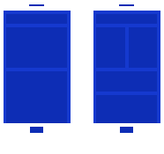
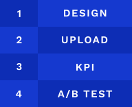

Acte de
conversion
& top task
L’acte de conversion est l’objectif principal de la page souhaité par la propriétaire du site.
Une top task, est quant à elle la fonctionnalité qui intéresse l’utilisateur lors de sa visite sur la page.
En général, l’acte de conversion est mis en en avant par rapport au reste du contenu.

Taux de
conversion
Ce taux est un rapport entre le nombre de visiteurs ayant visité la page et ceux qui vont réaliser l’acte de conversion.
Lors de l’analyse de ces taux, il est important de bien contextualiser le site. Il peut indiquer différentes choses en fonction de l’objectif du site, un taux semblant faible aux premiers abords peut-être bons pour certaines pages comme mauvais pour d’autres.

Tunnel de
conversion
Il s’agit du processus partant de l’arrivée du visiteur sur le site jusqu’à la réalisation de l’acte de conversion.
Un tunnel efficace est réalisé de manière à limiter le nombre d’utilisateurs perdu après chaque étape.

Taux de rebond
Ce taux indique le nombre d’utilisateurs arrivé sur le site et qui en sont partis sans visiter d’autres pages. On considère comme rebond lorsque :
- il a cliqué sur un lien externe;
- il a fermé l’onglet ou la fenêtre;
- il a tapé une nouvelle URL;
- il a cliqué sur « Précédent ».
Le taux de rebond dépend de type de page, comme pour le taux de conversion, avoir eu beaucoup d’utilisateurs qui ont rebondis peut être une bonne chose comme une mauvaise.
Page load
Il s’agit du temps de chargement du site, souvent négligé, il permet de gagnés plusieurs secondes et peut avoir un impact énorme, notamment sur la manière dont l’utilisateur va aborde la page par la suite.
Pour de gros sites tels que Amazon, quelques secondes représentent de gigantesques sommes d’argent.
Avoir un temps de chargement court demande plusieurs optimisations et du temps, néanmoins, c’est une étape primordiale pour avoir un site performant. Et puis après toutes ces optimisations, vous serez peut-être récompensé d’un magnifique 100 sur Google Page Insight.
A/B Testing
Le principe de ces tests est de mettre à disposition plusieurs versions différentes du site (deux ou plus). Permettant de voir quelle version est la plus efficace. Le but étant de mettre en place une version plus performante et obtenant plus de taux de conversion.
Pour que ces tests soient pertinents et intéressants, l’A/B Test doit être effectuer sur des sites avec beaucoup de visite.
Data Driven Design
Cette méthode divisée en quatre étapes vise à la répétition des étapes et à l’amélioration grâce au résultat obtenu avec les différents KPIs et A/B Tests mis en place. Afin d'avoir le site le plus efficace, il faut tester, modifier, retester et ainsi de suite jusqu’à avoir le résultat optimal.
Données quantitatives
Les KPIs donnent accès à des données quantitatives qui permettent d’améliorer le projet contrairement aux données qualitatives qui permettent de penser le projet.
Il est essentiel de penser le projet sur base des données qualitatives au risque de récolter les données quantitatives qui ne serviront pas à grand-chose étant donné que le projet ne sera pas bon.